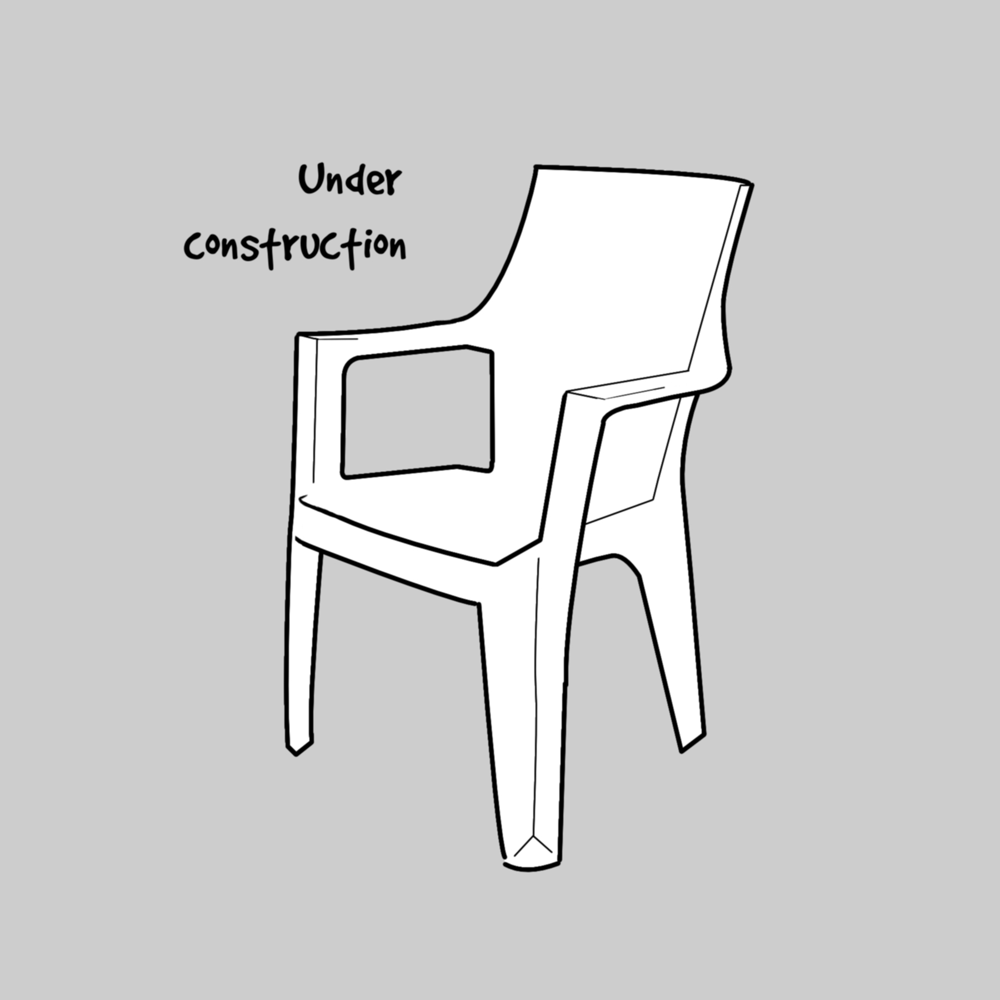

Digital ink, comics and code
Η διαφορά της χρήσης του ποντικιού ως μέσου επαφής με ότι υπάρχει στην οθόνη με την χρήση μια οθόνη αφής είναι τεράστια. Αρχικά θα πρέπει να εμπεδώσεις το γεγονός ότι από την στιγμή που έχεις μπροστά σου μια οθόνη αφής, ότι βλέπεις στην οθόνη και έχει αρκετά μεγάλο μέγεθος ώστε να μπορεί να πατηθεί, είναι διαθέσιμο ως επιλογή. Σε ένα σύγχρονο λειτουργικό που έχει σχεδιαστεί για αυτό το λόγο, όπως τα windows 11, η δυνατότητα αυτή είναι πολύ χρήσιμη. Λειτουργίες όπως η επιλογή κάποιου αντικειμένου, η μετακίνησης του κέρσορα σε άλλο σημείο του κειμένου, το διπλό κλικ, η μεγέθυνση, το scroll, η αλλαγή tab, το πάτημα κάποιου κουμπιού είναι όλα τους μια απλή υπόθεση… Τότε ακριβώς είναι το σημείο που συνειδητοποιείς ότι η αλλαγή είναι αρκετά μεγάλη.
Είναι όμως αρκετή για να δικαιολογήσει την αυξημένη τιμή ή μήπως χρειάζεται κάτι ακόμα για να αναβαθμίσεις πλήρως την εμπειρία σου και να αυξήσεις πραγματικά την παραγωγικότητα σου; Αυτό το κάτι, δεν είναι άλλο από την χρήση των κατάλληλων keyboard shortcut που γνωρίζεις και αγαπάς. Αλλά όχι αυτά που γνωρίζεις… Γιατί όχι; Μα γιατί η χρήση της οθόνης αφής υποκαθιστώντας το ποντίκι, κάνει τα shortcuts απαραίτητα μόνο για σύνθετες λειτουργίες όπως π.χ. τις επιλογές του μενού που εμφανίζεται με το δεξί κλικ.
Ας δούμε λοιπόν τι χρειάζεται να γνωρίζεις για να αντικαταστίσεις πλήρως το ποντίκι και να πάρεις το 100% από την χρήση της οθόνης αφής σε συνδυασμό με keyboard shortcuts.
Universal Shortcuts (όμοια σε κάθε εφαρμογή που σέβεται τον εαυτό της) :
Windows 11 - Desktop Shortcuts :
Windows 11 - File Explorer Shortcuts :
Αυτή είναι η επιλογή με τα βασικά shortcuts. Αν θέλετε μια περισσότερο PowerUser εμπειρία δοκιμάστε την εκτενέστερη λίστα.